The relaxing triple tile match that takes you around the worldEl puzzle relajante de emparejar fichas que te lleva por el mundo
Match 3 tiles, clear the board and fly, sail or ride to the next of 255 real destinations. A calm brain puzzle with no timers, made to play anywhere, even offline.Juntá 3 fichas iguales, limpiá el tablero y viajá en avión, barco o tren al próximo de 255 destinos reales. Un puzzle mental tranquilo, sin reloj, para jugar donde sea, incluso sin internet.
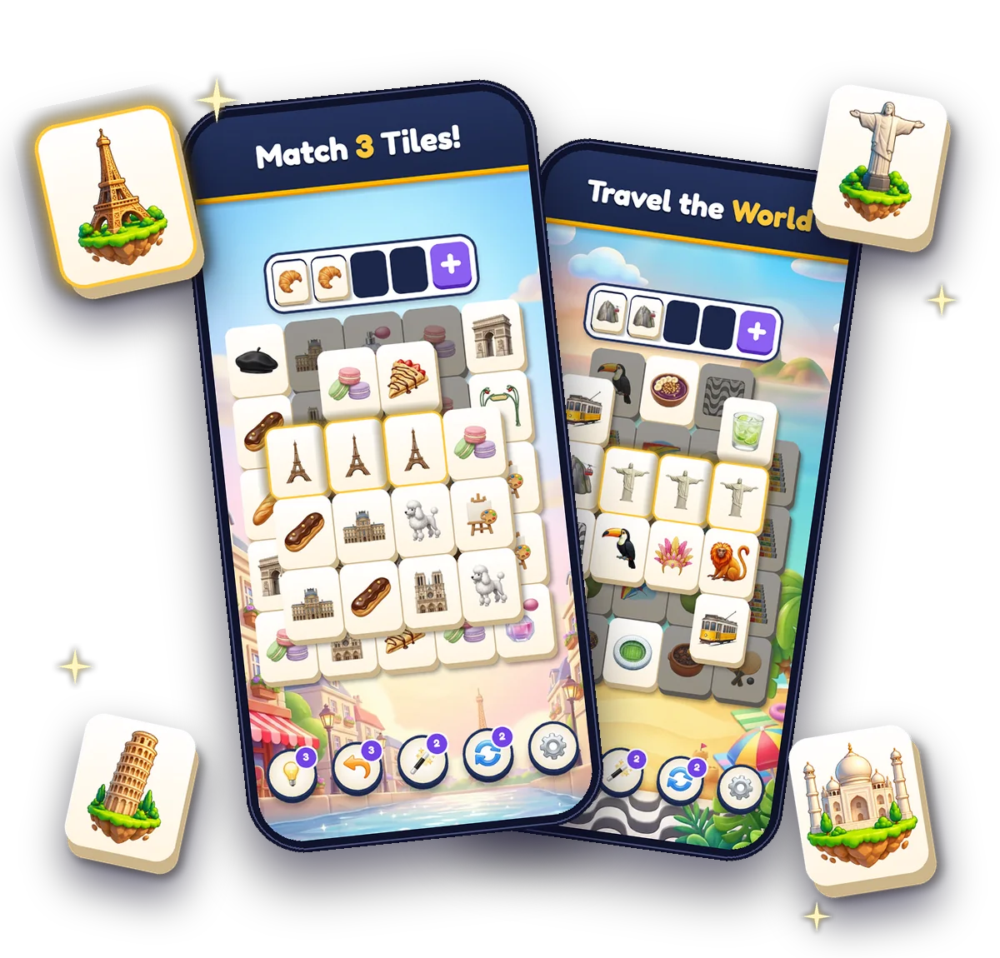
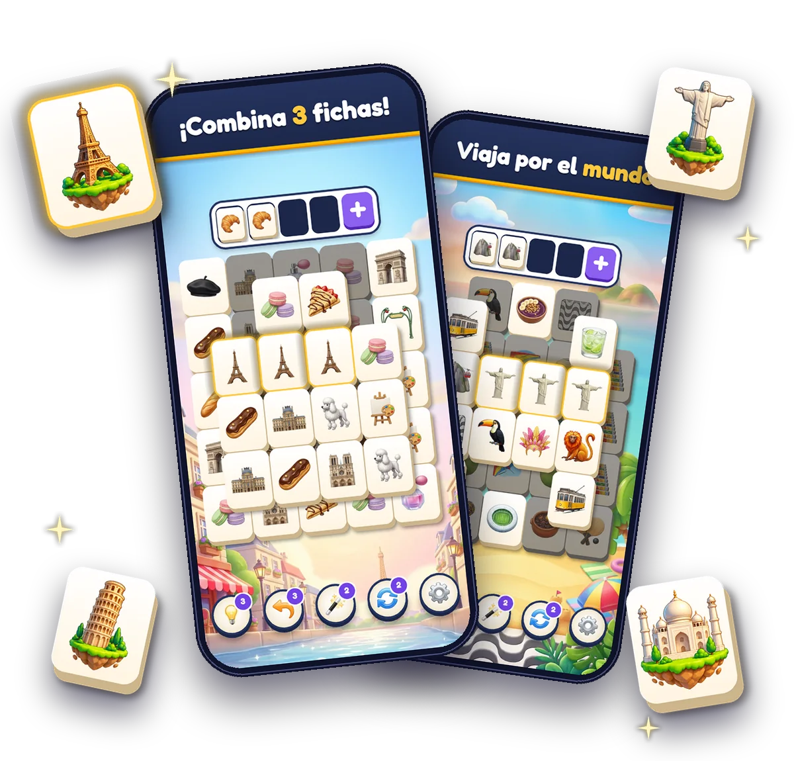
Free on iPhone and AndroidGratis en iPhone y Android
Pack your bags. Your first stop is one tap away.Armá la valija. Tu primera parada está a un toque.
Download Trip Sort, start in Montevideo and match your way around the world. No account, no sign-up, no Wi-Fi needed.Descargá Trip Sort, arrancá en Montevideo y emparejá fichas por todo el mundo. Sin cuenta, sin registro y sin wifi.
Free to play with optional in-app purchases and ads. Remove Ads is a single purchase.Gratis, con compras opcionales y anuncios. Quitar anuncios es una sola compra.

ScreenshotsCapturas
One board at a time, all around the worldUn tablero a la vez, por todo el mundo
Every city brings its own tiles: croissants and the Eiffel Tower in Paris, torii gates and sushi in Kyoto, toucans and Christ the Redeemer in Rio.Cada ciudad trae sus propias fichas: croissants y la Torre Eiffel en París, toriis y sushi en Kioto, tucanes y el Cristo Redentor en Río.
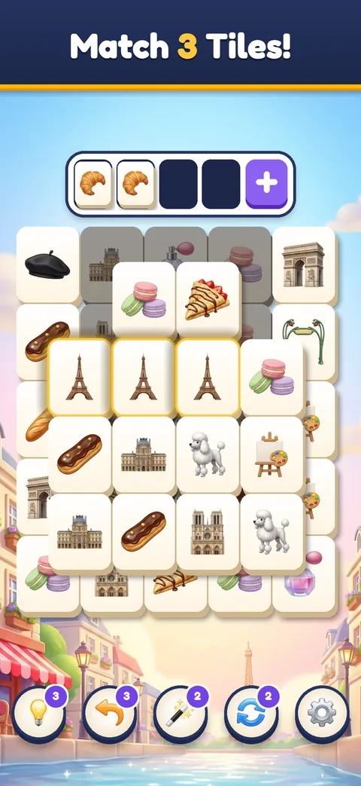
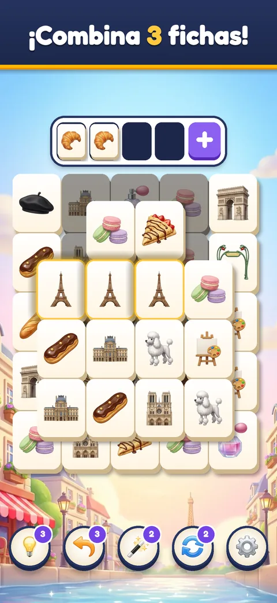
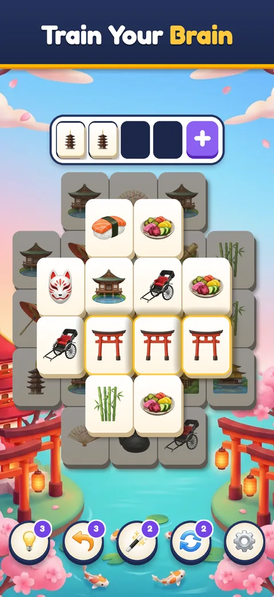
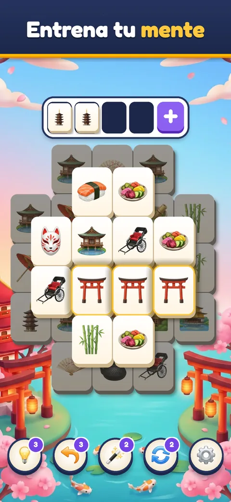
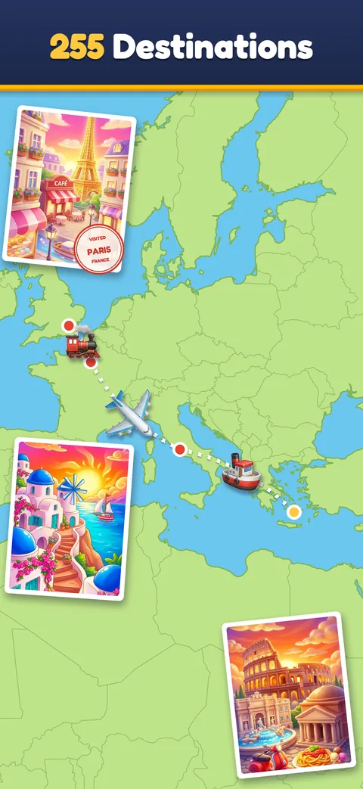
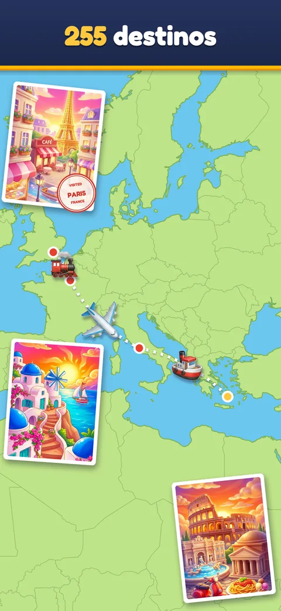
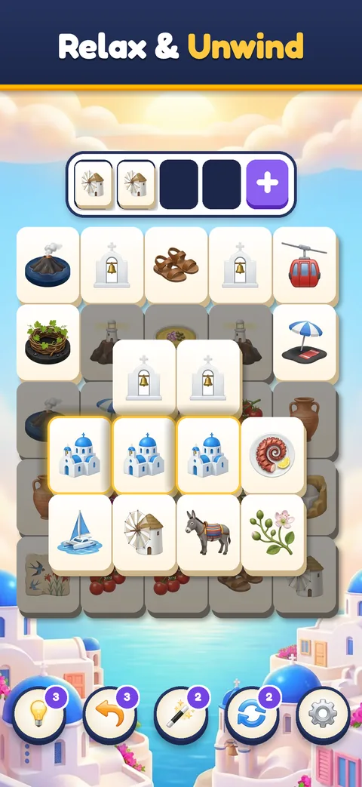
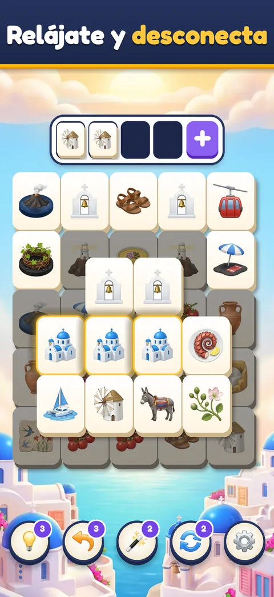
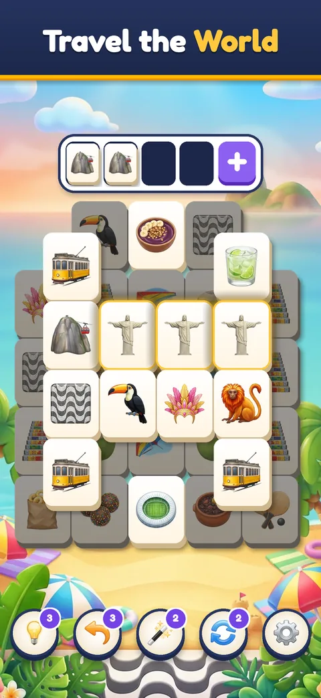
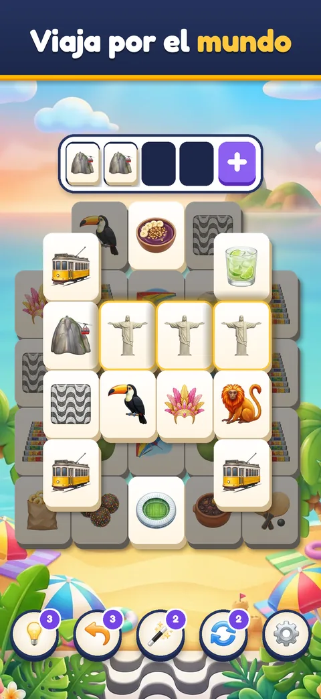
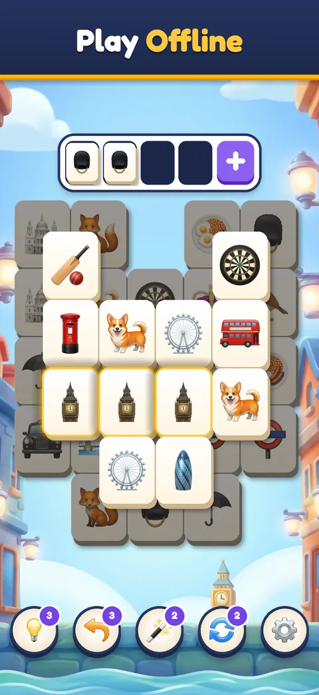
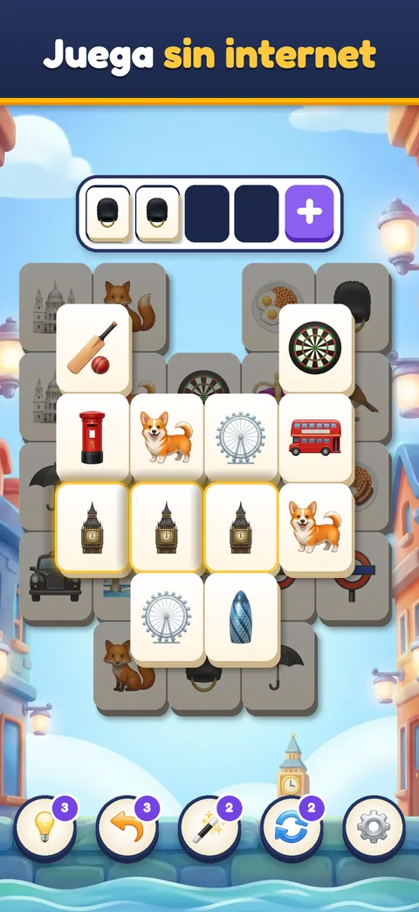
Inside the gameEl juego por dentro
A puzzle game that feels like a tripUn juego de puzzle que se siente como un viaje
Every level moves you forward on a real route, and every city leaves you something to keep.Cada nivel te avanza en una ruta real, y cada ciudad te deja algo para guardar.

255 destinations255 destinos
Fly, sail and ride to the next cityVolá, navegá y viajá a la próxima ciudad
Clear the 12 levels of a destination and watch your plane, ship, train or bus cross the map to the next stop. From Montevideo to Paris, Kyoto, Cairo and Sydney: 255 real places on every continent.Completá los 12 niveles de un destino y mirá cómo tu avión, barco, tren o bus cruza el mapa hasta la próxima parada. De Montevideo a París, Kioto, El Cairo y Sídney: 255 lugares reales en todos los continentes.
How the world tour works →Cómo funciona la vuelta al mundo →
See all 255 stops on the map →Ver las 255 paradas en el mapa →
Postcards and passportPostales y pasaporte
Every level paints a piece of the postcardCada nivel pinta un pedazo de la postal
Each board you clear reveals more of the city's postcard. Finish the city and your passport gets its VISITED stamp.Cada tablero que limpiás revela más de la postal de la ciudad. Terminá la ciudad y tu pasaporte recibe el sello de VISITADO.
- A hand-painted postcard for every destinationUna postal ilustrada para cada destino
- A passport that fills up stamp by stampUn pasaporte que se llena sello por sello
- Daily rewards, daily missions and a Daily ChallengePremios diarios, misiones diarias y un Desafío Diario
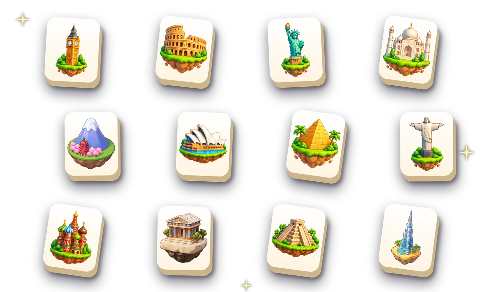
23 landmarks23 monumentos
Collect the wonders of the worldColeccioná las maravillas del mundo
Some destinations hide a famous landmark: the Eiffel Tower, the Taj Mahal, Chichen Itza, the Great Wall of China and more. Each one comes with a short real story.Algunos destinos esconden un monumento famoso: la Torre Eiffel, el Taj Mahal, Chichén Itzá, la Gran Muralla y más. Cada uno trae una historia real corta.
How it worksCómo funciona
How to play a triple tile matchCómo se juega a emparejar fichas de a tres
You learn it in one level. Mastering the layered boards is the fun part.Se aprende en un nivel. Dominar los tableros con capas es lo divertido.
Tap a tileTocá una ficha
It drops into your tray, which has four slots.Va a tu bandeja, que tiene cuatro casilleros.
Match threeJuntá tres
Three identical tiles in the tray clear on their own.Tres fichas iguales en la bandeja desaparecen solas.
Plan aheadPensá antes
Only uncovered tiles can be picked, and a full tray ends the level.Solo se pueden tocar las fichas destapadas, y si la bandeja se llena, perdés.
Clear and travelLimpiá y viajá
Empty the board to win and move on toward the next city.Vaciá el tablero para ganar y avanzar hacia la próxima ciudad.
GuidesGuías
Tips, tricks and offline puzzle ideasConsejos, trucos e ideas para jugar sin internet
Short guides for tile match players, travelers and anyone looking for a calm brain game.Guías cortas para fans de las fichas, viajeros y cualquiera que busque un juego mental tranquilo.
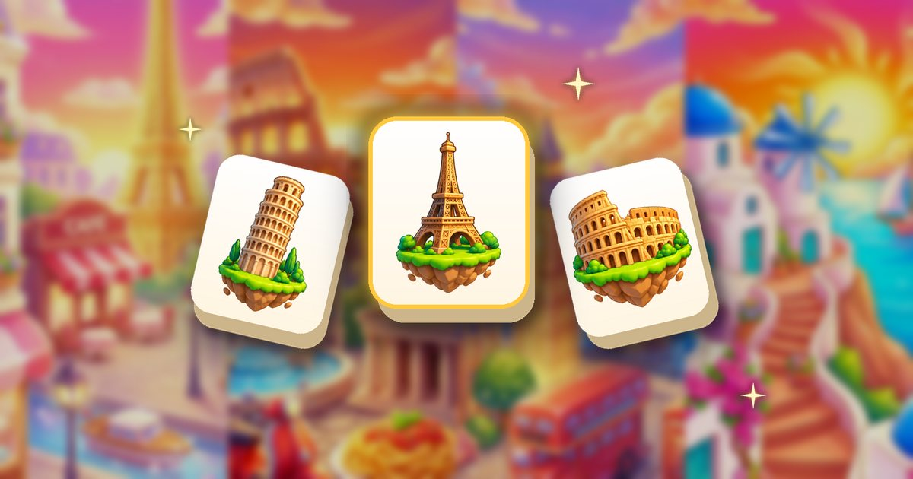
What Is a Triple Tile Match Game? Rules and How to Start¿Qué es un juego de triple tile match? Reglas y cómo empezar
The rules of tile matching, why the tray matters and how to clear your first boards.Las reglas de emparejar fichas, por qué importa la bandeja y cómo limpiar tus primeros tableros.
Read the guide →Leer la guía →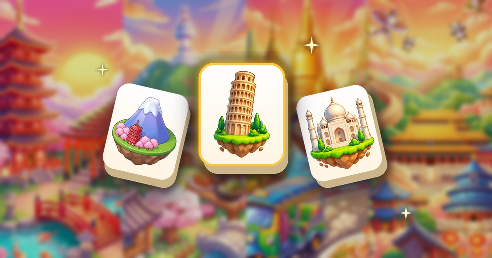
How to Beat Hard Tile Match Levels: 9 Tips That WorkCómo pasar niveles difíciles de tile match: 9 consejos que funcionan
Plan around the tray, uncover tiles first and save boosters for the right moment.Jugá pensando en la bandeja, destapá fichas primero y guardá los boosters para el momento justo.
Read the guide →Leer la guía →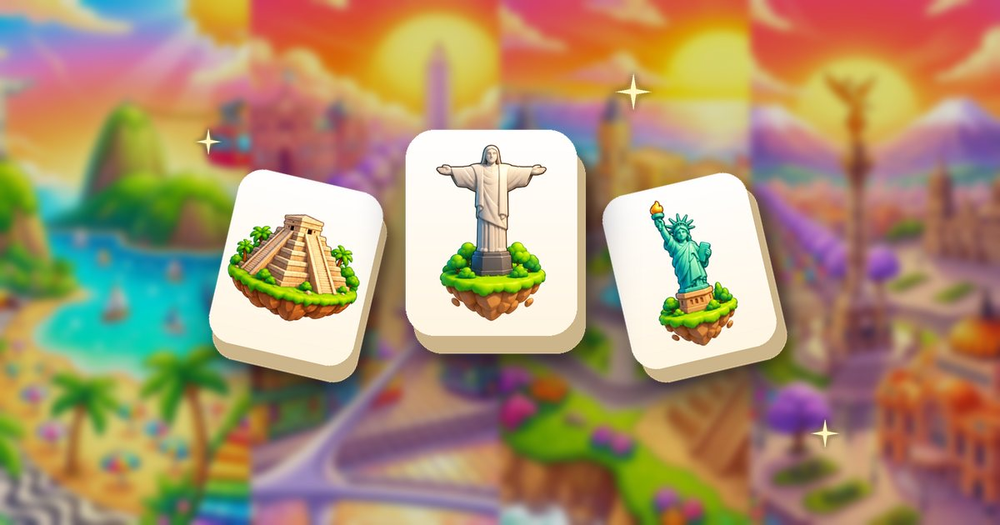
Offline Puzzle Games With No Wi-Fi NeededJuegos de puzzle offline que no necesitan wifi
What makes a puzzle game truly offline, and how Trip Sort plays with zero signal.Qué hace que un juego de puzzle sea offline de verdad, y cómo se juega Trip Sort sin señal.
Read the guide →Leer la guía →
Games to Play on a Plane Without Wi-FiJuegos para jugar en el avión sin wifi
How to get your phone ready for a long flight, and a puzzle trip that works in airplane mode.Cómo preparar el teléfono para un vuelo largo, y un viaje de puzzles que anda en modo avión.
Read the guide →Leer la guía →
Brain Puzzle Games for Adults: A Few Minutes a DayJuegos mentales para adultos: unos minutos al día
What a tile puzzle actually asks of your brain, and how to build a short daily habit.Qué le pide de verdad un puzzle de fichas a tu cabeza, y cómo armar un hábito diario corto.
Read the guide →Leer la guía →
Easy Puzzle Games for Seniors: What to Look ForJuegos de puzzle fáciles para personas mayores: qué buscar
No timers, simple taps, no account: a checklist for picking a calm puzzle game.Sin reloj, toques simples, sin cuenta: una lista para elegir un juego de puzzle tranquilo.
Read the guide →Leer la guía →
Tile Match vs. Mahjong Solitaire: What's the Difference?Tile match vs. mahjong solitario: ¿cuál es la diferencia?
Pairs versus triples, free tiles versus a tray: how the two classics compare.Pares contra tríos, fichas libres contra bandeja: cómo se comparan los dos clásicos.
Read the guide →Leer la guía →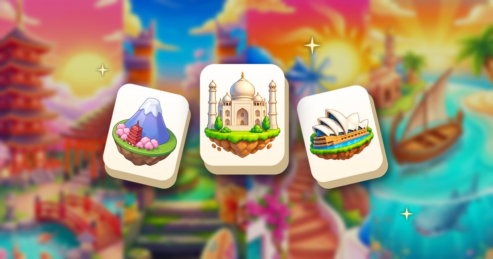
Relaxing Zen Puzzle Games to Unwind After a Long DayJuegos de puzzle zen y relajantes para desconectar al final del día
What makes a game feel calm, and how to set Trip Sort up for a quiet ten minutes.Qué hace que un juego se sienta tranquilo, y cómo dejar Trip Sort listo para diez minutos de calma.
Read the guide →Leer la guía →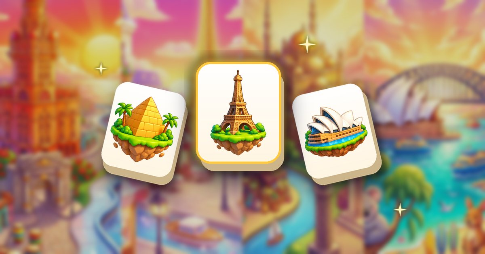
A Travel Puzzle Game: Visit 255 Destinations From Your PhoneUn juego de puzzle de viajes: visitá 255 destinos desde tu teléfono
Postcards, passport stamps and famous landmarks: how a trip around the world works.Postales, sellos de pasaporte y monumentos famosos: así funciona una vuelta al mundo.
Read the guide →Leer la guía →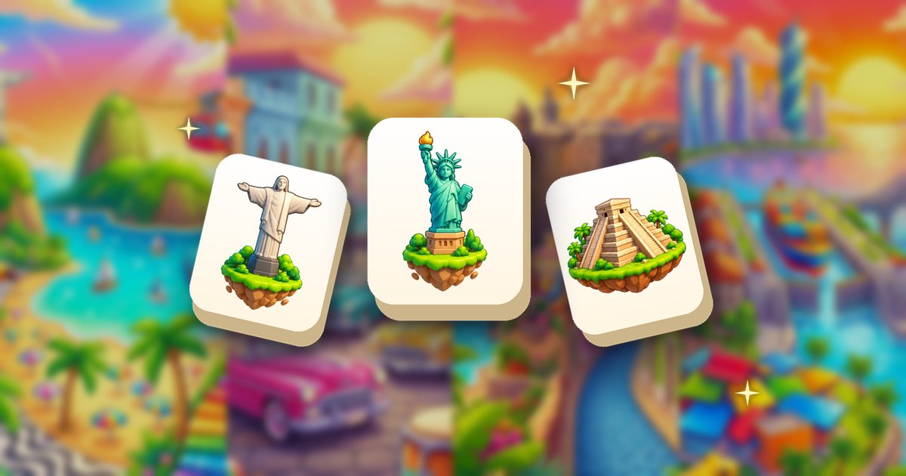
Tile Match Boosters Explained: Hint, Undo, Shuffle, Wand, Extra SlotLos boosters de tile match explicados: pista, deshacer, mezclar, varita y casilla extra
What each booster does, when it saves a level, and how to earn more without paying.Qué hace cada booster, cuándo salva un nivel, y cómo ganar más sin pagar.
Read the guide →Leer la guía →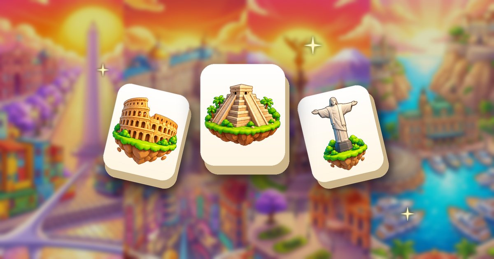
Tile Matching Games in Spanish: Emparejar FichasJuegos de emparejar fichas: cómo se juegan y cuál probar
A guide for Spanish speakers searching for tile matching games.Qué son los juegos de emparejar fichas, cómo se juegan y cómo es Trip Sort.
Read the guide →Leer la guía →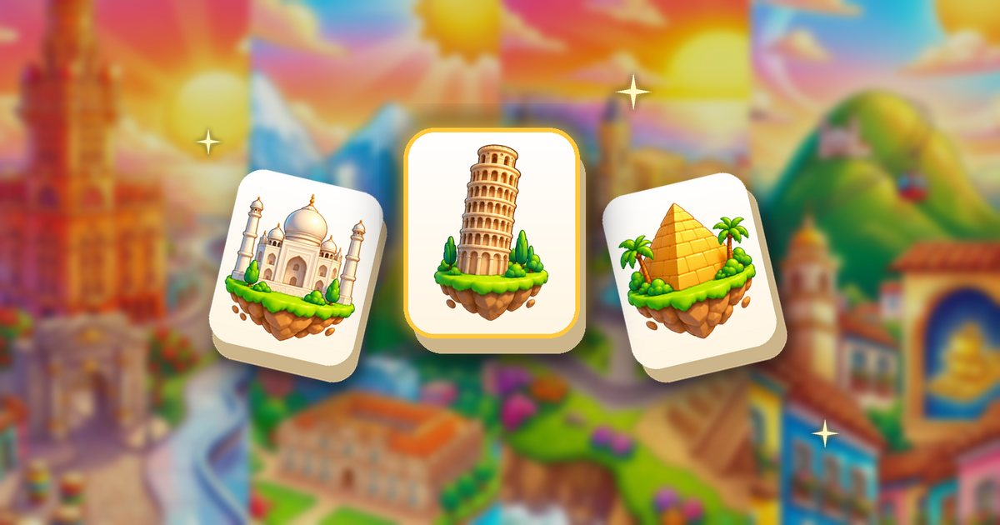
Offline Brain Games, for Spanish SpeakersJuegos mentales sin internet para adultos
Brain games that work offline, explained in Spanish.Juegos para ejercitar la cabeza que andan sin wifi ni datos, y cómo jugar Trip Sort.
Read the guide →Leer la guía →FAQ
Questions about Trip SortPreguntas sobre Trip Sort
What is a triple tile match game?¿Qué es un juego de triple tile match?
A puzzle where you tap tiles to move them into a tray, and every three identical tiles clear. You win when the board is empty and lose if the tray fills up without a match. In Trip Sort the tray has four slots and every board is themed after a real city.Un puzzle donde tocás fichas para pasarlas a una bandeja, y cada tres fichas iguales desaparecen. Ganás cuando el tablero queda vacío y perdés si la bandeja se llena sin un trío. En Trip Sort la bandeja tiene cuatro casilleros y cada tablero es de una ciudad real.
Learn more →Saber más →Can I play Trip Sort offline, without Wi-Fi?¿Puedo jugar Trip Sort sin internet ni wifi?
Yes. Every level plays with no internet, no Wi-Fi and no mobile data. Offline there are simply no ads and the Shop is not available.Sí. Todos los niveles se juegan sin internet, sin wifi y sin datos. Sin conexión simplemente no hay anuncios y la Tienda no está disponible.
Learn more →Saber más →Is Trip Sort a good game to play on a plane?¿Sirve Trip Sort para jugar en el avión?
Yes. It works in airplane mode, has no timers and each level takes a few minutes, so it fits anything from a short hop to a long-haul flight.Sí. Anda en modo avión, no tiene reloj y cada nivel dura unos minutos, así que sirve para un vuelo corto o para uno de muchas horas.
Learn more →Saber más →How do I beat a hard level?¿Cómo paso un nivel difícil?
Uncover tiles before you fill the tray, avoid leaving single tiles waiting in it, and keep boosters for when the tray is almost full. Undo, Shuffle, the Magic Wand and the extra fifth slot can each save a level.Destapá fichas antes de llenar la bandeja, no dejes fichas sueltas esperando en ella y guardá los boosters para cuando esté casi llena. Deshacer, Mezclar, la Varita y el quinto casillero pueden salvar un nivel.
Learn more →Saber más →Does Trip Sort train your brain?¿Trip Sort sirve como juego mental?
It keeps your mind busy in a good way: you scan the board for matches, plan a few moves ahead and manage a small tray. A few levels a day make a calm brain break.Te mantiene la cabeza ocupada en el buen sentido: buscás tríos en el tablero, pensás un par de jugadas adelante y manejás una bandeja chica. Unos niveles por día son una pausa mental tranquila.
Learn more →Saber más →Is Trip Sort easy enough for seniors?¿Es fácil para personas mayores?
Yes. You only tap, there are no timers, there is no account to create and the first boards are gentle, so anyone can pick it up at their own pace.Sí. Solo hay que tocar, no hay reloj, no hay que crear una cuenta y los primeros tableros son suaves, así que cualquiera lo agarra a su ritmo.
Learn more →Saber más →Is Trip Sort like mahjong?¿Trip Sort es como el mahjong?
It shares the look and the calm of mahjong solitaire, with stacked tiles you uncover layer by layer. The difference is that you collect three identical tiles in a tray instead of removing pairs.Tiene el estilo y la calma del mahjong solitario, con fichas apiladas que vas destapando capa por capa. La diferencia es que juntás tres fichas iguales en una bandeja en vez de sacar pares.
Learn more →Saber más →Is there a timer?¿Hay reloj?
No. Trip Sort has no timers, so you can take as long as you like on every move. Music, sounds and vibration each have their own switch in Settings.No. Trip Sort no tiene reloj, así que podés tomarte todo el tiempo que quieras en cada jugada. La música, los sonidos y la vibración tienen cada uno su interruptor en Ajustes.
Learn more →Saber más →How many levels and destinations are there?¿Cuántos niveles y destinos hay?
255 real destinations on every continent, with 12 levels each: over 3,000 levels. Every city has its own tiles, a postcard and a passport stamp, and 23 famous landmarks wait along the way.255 destinos reales en todos los continentes, con 12 niveles cada uno: más de 3.000 niveles. Cada ciudad tiene sus fichas, una postal y un sello de pasaporte, y en el camino te esperan 23 monumentos famosos.
Learn more →Saber más →What do the boosters do?¿Qué hacen los boosters?
Hint lights up your best move, Undo puts your last tile back on the board, Shuffle mixes up the tiles left, the Magic Wand clears a whole set and Extra Slot adds a fifth slot to the tray.La Pista ilumina tu mejor jugada, Deshacer devuelve tu última ficha al tablero, Mezclar reordena las fichas que quedan, la Varita mágica saca un trío entero y el Casilla extra suma un quinto lugar a la bandeja.
Learn more →Saber más →Is Trip Sort free?¿Trip Sort es gratis?
Yes, it is free to play. It has optional in-app purchases and ads, and a single Remove Ads purchase turns off the ads between levels.Sí, es gratis. Tiene compras opcionales y anuncios, y una sola compra de Quitar anuncios saca los anuncios entre niveles.
Learn more →Saber más →Do I need an account?¿Necesito una cuenta?
No. There is no sign-up. Your progress is saved on your phone.No. No hay registro. Tu progreso se guarda en tu teléfono.
Learn more →Saber más →Ready for your next trip?¿Listo para tu próximo viaje?
3,000+ relaxing levels, 255 cities and a passport waiting for its first stamp. Download Trip Sort free and start matching.Más de 3.000 niveles relajantes, 255 ciudades y un pasaporte esperando su primer sello. Descargá Trip Sort gratis y empezá a emparejar.